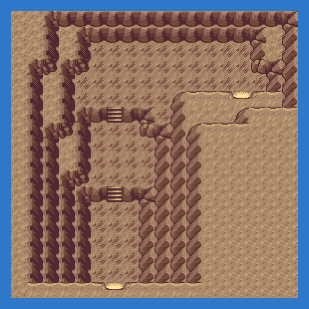
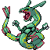

TIP
No wild Pokémon in the grass here. Time of day: M = morning (6–10), D = day (10–19), E = evening (19–20), N = night (20–6).
Event 1: Rayquaza
Wake Rayquaza at the top; it flies to Sootopolis and ends the fight. Rayquaza itself can be caught here later.
